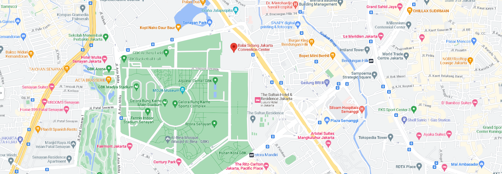

Deskripsi Singkat JCC
JCC (Jakarta Convention Center) adalah sebuah pusat konvensi terkenal yang berlokasi di Jakarta, Indonesia. Dibuka sejak tahun 1974, JCC telah menjadi tempat yang sangat populer untuk menyelenggarakan berbagai konferensi, pameran, acara olahraga dalam ruangan, dan konser musik. Dengan bangunan modern dan fasilitas yang lengkap, JCC menawarkan ruang serbaguna yang ideal untuk berbagai kegiatan skala nasional maupun internasional. Sebagai salah satu pusat konvensi tertua di Jakarta, JCC memiliki reputasi yang kuat dan telah menjadi tuan rumah berbagai acara bergengsi, termasuk konferensi tingkat tinggi dan pertemuan diplomatik. Dengan lokasinya yang strategis di pusat kota Jakarta, JCC menjadi tempat yang ramai dikunjungi sepanjang tahun oleh berbagai kalangan, baik untuk kegiatan bisnis maupun hiburan.
Acara Terbaru

Acara Musik

Acara Anime

Acara Olahraga
Lokasi
Jl. Gatot Subroto No.1, RT.1/RW.3, Gelora, Kecamatan Tanah Abang, Kota Jakarta Pusat, Daerah Khusus Ibukota Jakarta 10270